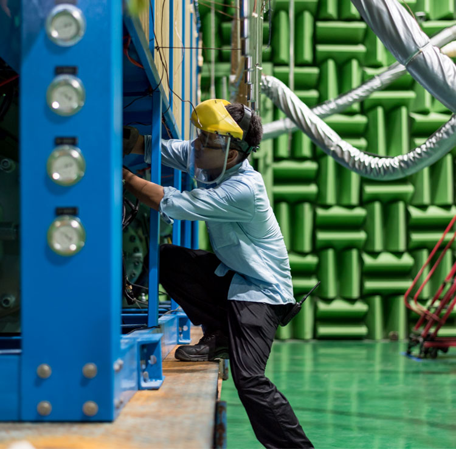

我们的公司
未来始于当下
江森自控将致力于提高未来的工作效率、
安全性和可持续性。
我们创造完美协调的智能建筑、高能效解决方案、
集成式基础设施以及新一代交通运输系统，
实现智慧城市和社区的承诺。
这一承诺的核心要义就是通过创新让
人们的生活和整个世界变得更美好。
未来始于当下
江森自控将致力于提高未来的工作效率、
安全性和可持续性。
我们创造完美协调的智能建筑、高能效解决方案、
集成式基础设施以及新一代交通运输系统，
实现智慧城市和社区的承诺。
这一承诺的核心要义就是通过创新让
人们的生活和整个世界变得更美好。
江森自控是全球多元化技术和工业领域的领导者，致力于为150多个国家的广大客户提供服务。公司旗下135,000名员工通过创造性地营建智能楼宇、高效能源解决方案、集成基础设施和新一代交通系统，并使之相互精准配合，实践公司建设智能城市和社区的承诺。我们对可持续发展的关注，可追溯到1885年公司成立之初发明的全球首款室内电动恒温器。我们承诺帮助客户取得成功，通过战略性地专注于发展建筑和能源两大增长平台，为各方利益相关者创造更大的价值。
更多信息请访问
愿景 一个安全、舒适、可持续发展的世界。
使命 帮助我们的客户随时随地取得成功
诚信为先
我们承诺诚实和透明。我们坚持最高诚信标准并信守我们做出的承诺。
使命为本
我们坚信利成于益，勇于承担：通过我们提供的解决方案、我们对社会的奉献、我们开展业务的方式以及我们对保护人民和环境的承诺让世界变得更加美好。
客户至上
客户成功，我们才能成功。长期战略合作关系带来的独特洞见和实力，让我们能够创造卓越的客户体验与解决方案。
着眼未来
我们的创新和持续改进文化激励我们在解决当今挑战的同时，不断思考“接下来会发生什么”。
同一个团队
我们是同一个团队，致力于团结协作，创造高效适用的解决方案，推动世界进步。
早在几乎无人讨论碳排放和气候变化的 1885 年，富有前瞻性思维的Warren Johnson 就创立了一家为节约利用宝贵能源而探索新方法的公司。在此期间，他还推出了“客户至上”的创新理念，并在此后的 130 多年间始终秉承该理念，激励着我们的无数员工不断推动江森自控获得更多成功。即使在创立这家如今名为“江森自控”的公司之前，Warren Johnson 就已经成为了一名伟大的发明家。他发明或开创的气动塔钟、电动蓄电池、无线电报业务以及蒸汽动力豪华轿车和邮政服务卡车，引领并成就了未来。
Warren Johnson 为一款建筑设施室温控制装置“电动远程测温器”申请了专利，并离开他的家乡威斯康辛州白水城（Whitewater）前往密尔沃基市募集生产资金。
Warren Johnson 与密尔沃基商人和金融家 William Plankinton 合伙创办了江森电子服务公司。Johnson 担任公司副总裁兼财务主管，而Plankinton 担任总裁。密尔沃基公共图书馆和市政厅的安装项目帮助公司实现了快速发展壮大。
支付第一次股息
在纽约证券交易所挂牌交易，江森服务公司 为美国国家航空航天局位于佛罗里达州卡纳维拉尔角的航天器装配大楼提供防止雨云形成的气候控制装置。后来并入江森自控的 York International 负责安装了 10,500 吨空调水冷机。
公司更名为 Johnson Controls, Inc.。
收购 Globe-Union 后，江森自控成为美国汽车电池生产领军企业。该公司成立于 1911 年（最初名为 Globe Electric），曾发明薄壁高强度聚丙烯电池外壳，这在电池设计领域普遍公认为一项重大突破。
江森自控继续推进多元化步伐，相继收购 Hoover Universal（汽车座椅和塑料机械业务）和汽车座椅供应商 Ferro Manufacturing。这两笔收购意味着，江森自控具备了整套汽车座椅系统的工程设计和组装能力。
江森自控完成有史以来最大一笔收购：遍及全球的约克国际空调公司的加热、通风、空调和制冷产品。公司还收购了德尔福（Delphi）全球汽车电池业务，并入选道琼斯可持续发展全球指数。
公司成立 125 周年，威斯康辛州格兰岱尔总部通过 LEED® 铂金认证。建筑设施效益事业部迎来有史以来最大一笔订单，负责执行沙特阿拉伯麦加大清真寺项目，而密歇根州霍兰电池厂在美国率先生产混合动力与电动车锂离子电池。江森自控庆祝成立125周年，连续支付123年股息
剥离汽车电子业务
江森自控收购Air Distribution Technologies

江森自控和日立签订了最终全球合资企业协议
江森自控达成最终协议将Global WorkPlace Solutions (GWS) 出售给 CBRE
宣布专业汽车内饰业务剥离
江森自控宣布合并泰科国际
江森自控一切的卓越成就直接来自于我们135,000员工的专注和投入，而在很多因素不断变化时，我们的愿景和战略始终保持稳定，凭借卓越服务、世界一流的产品和领先的创新技术帮助客户赢得成功。对这些实践进行标准化会将我们打造成世界上最具运营能力的公司。

江森自控运营系统（JCOS）是我们为传递世界一流的产品和创新而打造的一套通用的流程体系和工具。它充分利用了我们自身的优势，来驱动企业运行的速度、灵活、质量和生产效率。该系统的完全成熟，也将在提高顾客忠诚度上体现真正的价值，并带来新的市场和渠道，来提升运营利润率并降低运营成本。对JCOS实践应用的最优化，最终会使整个企业运营的每个阶段都得以做到精益求精。
江森自控制造体系（JCMS）作为JCOS范畴内的关键组成，被建立与部署为一个综合模型。它旨在减少浪费，提升产品质量、安全性、员工参与度、物料控制，以及强化公司建筑能效、能源动力业务部门下94个工厂的可持续发展。
该模型包含企业范围内的标准化指标与报告。其开发与部署了一个在线测评工具，用于描述最佳的生产实践以使每个工厂可以参照评估自己，找出绩效差距并制定改善的行动计划。
在上海打造全球总部，使之与江森自控在北美密尔沃基市拥有130年历史的全球总部平行发展，体现了公司对中国和亚太地区的坚定承诺和投入。
上海全球第二总部的落成，将使我们能够加深与中国和亚太地区客户和市场的战略合作，更迅速地洞察和满足市场和客户的发展需求，吸引和发展中国和亚太地区的一流人才，并更好地履行公司的企业公民责任，为中国和亚太地区的经济可持续性发展贡献技术，服务和热情。
江森自控的产品无处不在 - 但我们经常身处幕后。通常您无法看到我们的产品和技术如何协同工作，实现节能，保障人们安全，让我们的建筑和城市更加智能。而我们亚太总部的客户展示中心是一个让我们的解决方案现身说法的互动体验中心。它将带您进入世界最高建筑的核心，展示我们的电池如何为市场上最快的汽车供电，还有我们的集成技术如何在亚洲最繁忙的机场保障乘客安全和航班正点。展厅包含了产品展示、智能面板与桌面以及增强现实。通过参观这里，您可以看到我们自己的产品和解决方案如何让我们的大楼成为中国最绿色的建筑之一。
江森自控亚太总部致力于通过规划统一的企业增长战略，构建职能部门的卓越能力，推动与本土市场利益相关者的战略合作，以及提升公司作为最佳雇主的美誉，来推动和加速江森自控在亚太地区的增长。